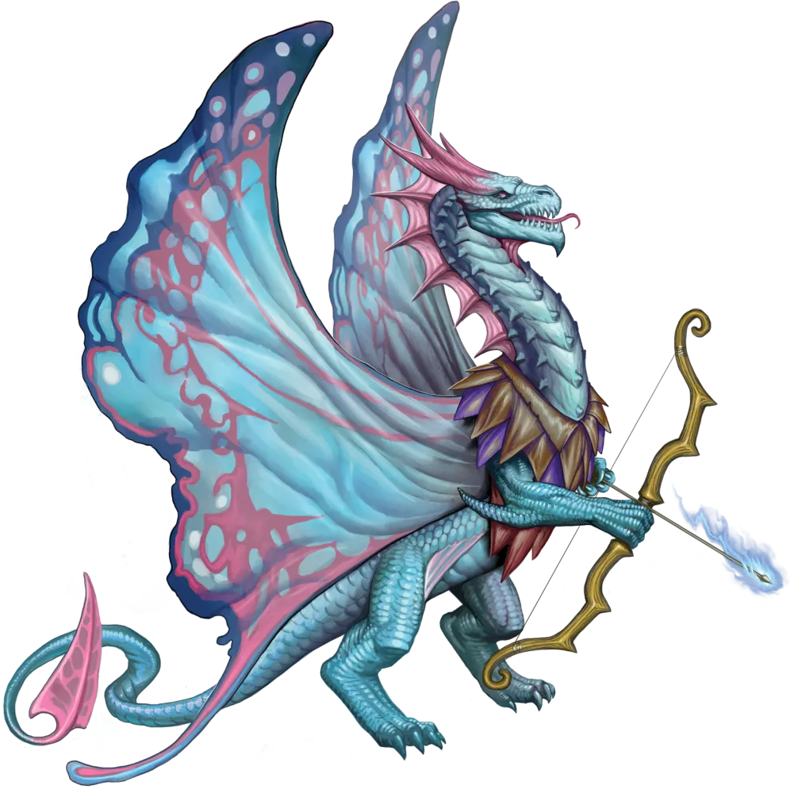
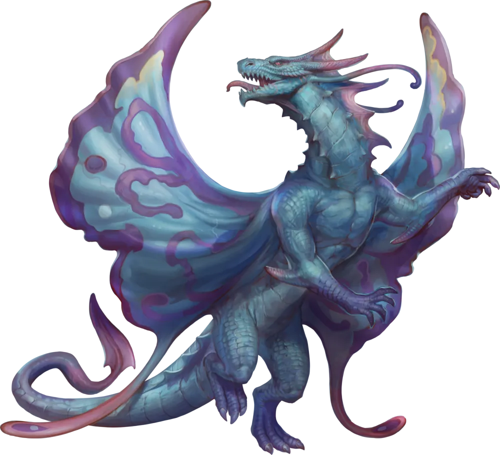

亘古绵长而伟力如传说的巨龙，令世界各地的其他种族心生敬畏、恐惧与向往。在某些文化中，巨龙正是力量的象征；而在另一些文化里，它们则是王权的先驱。但对巨龙自身而言，这不过是它们的本色而已。这一朴素的事实从根本上奠定了巨龙与其他种族之间的关系底色。然而，并非所有巨龙都像人类故事书中所描绘的那样――沉睡在堆满财宝的洞窟里，直到某个鲁莽的冒险者胆敢为夺取宝库而向它们发起挑战。有时候，那名冒险者本身就是巨龙！
你出身于一脉欢快爱闹的恶作剧者与友善谐星世系。你是仙灵龙家族的一员。你的关联伤害类型为毒素，你的吐息武器为15尺锥状的斑斓欢愉气体，需要进行体质豁免。
巨龙特质
属性值提升。你的魅力值提升2点。你自选的一项属性值提升1点。
年龄。任何年龄段的巨龙都可以举行永恒之光仪式，因此哪怕是一条刚完成仪式的初生永光龙，严格来说也可能已经活了数千岁。不过，仪式澎湃的魔法能量会洗去衰老的痕迹。从仪式中苏醒的初生永光龙洋溢着青春活力与无限潜能。尽管部分学者持不同看法，但只要不死于暴力或其他灾祸，永光龙的寿命与传统派巨龙同样漫长。
阵营。永光龙的龙族血统会强烈影响其信念，但影响程度远不如同血统的传统派巨龙。例如，银永光龙往往是善良的捍卫者，而黑永光龙则往往狡诈刻薄。然而，永光龙深知龙脉并非不可违逆的宿命。任何永光龙都可以完全抛弃先祖的旧习，去开拓属于自己的道路。
体型。除非一条永光龙将自身魔力专注于增大体型（许多永光龙都会这样做），否则它们的体型并不会比常见的类人种族更大。你的体型可在小型或中型之间自选。
速度。你的基础步行速度为30尺。
黑暗视觉。你同样具备传统派巨龙的敏锐感官。在距离你60尺范围内，你可以将微光光照视作明亮光照，将黑暗视作微光光照。你在黑暗中无法分辨颜色，只能看到灰度的影像。
龙之馈赠。你从巨龙职业所列的龙之馈赠中获得一项龙之馈赠。如果某项馈赠具有先决条件，你必须满足其先决条件才能获得它。
龙类。你的生物种类为龙类，而非类人生物。
天生武器。除常规的徒手打击外，你还获得两种天生武器攻击：啃咬攻击与爪击攻击。你的啃咬攻击造成1d6点穿刺伤害；你的爪击攻击造成1d4点挥砍伤害。
你必须至少有一只手空闲才能发动爪击攻击。
你在进行爪击攻击的攻击检定和伤害掷骰时可以使用敏捷代替力量，但啃咬攻击不适用。
语言。你能够说、读、写通用语和龙语。
天生谐星。你天生深谙喜剧节奏，并乐于在众人面前献艺。你具有表演技能的熟练项。当你为进行喜剧演出而做表演检定时，你具有优势。
永光皮克精龙背景设定
皮克精龙友善而好交际，虽然热爱栖居于荒野之中，却也同样热衷于交谈与受人瞩目。这种天性驱使它们频繁与外界接触，交往对象从聪慧的动物、野兽、其他巨龙，到精类乃至短寿的凡人无所不包。无论寻访何人、以何种方式接近对方，皮克精龙都沉醉于拥有听众与看客的快乐，一旦缺少陪伴便会黯然神伤。无论漫游何方、选择怎样的生活方式，这种乐观开朗的心态都令皮克精龙受益匪浅。相当一部分皮克精龙会受到永恒之光仪式的吸引，其中付诸行动的也不在少数。因此，尽管这种蜕变在仙灵龙中仍算不上司空见惯，但比起大多数其他龙族血统而言已要常见得多。
皮克精龙天性积极友善，比起物质财富，它们更看重转瞬即逝的美好体验。然而，在广阔的凡世间肆意横行的自私风气，使得那些举行了永恒之光仪式并选择融入都市生活的皮克精龙在步入周边社会时倍感格格不入――这与昔日置身事外地旁观、只按自身意愿与外界打交道截然不同！尽管如此，凭借天生的好奇心与适应力――再加上善于脱身避开正面冲突、等各方气消后再作计议的本事――即便面对重重挑战与数不清的磕绊失误，它们往往仍能满怀热忱地拥抱这一转变。
传统派皮克精龙依然将永光皮克精龙视作血脉同亲，一如永恒之光仪式及其蜕变发生之前；永光皮克精龙对传统派同胞亦怀有同样的情谊。无论彼此选择以何种方式成长与获取力量，皮克精龙都不会对同族妄加评判，而是坦然接纳彼此本来的模样，尊重各自的选择、梦想与生活方式。
许多皮克精龙因热爱恶作剧和讲笑话而被吟游诗人的生活所吸引。看重隐蔽巧思（这样才更方便悄悄搞怪捉弄人！）的皮克精龙则常常选择成为游荡者。还有一些皮克精龙觉醒了与生俱来的魔法力量，从而成为术士。那些偏爱远离城市、或是与天地荒野及自然花园有着格外深厚共鸣的个体，则会成为才华横溢的德鲁伊。最后，那些立志过上冒险英雄生活、一心行侠仗义与扶危济困的皮克精龙，偶尔也会宣誓成为契合自身理想的圣武士。
归根结底，大多数皮克精龙都是热心行善者与和平主义者。它们倾向于加入彻底远离暴力的团体，例如剧团、马戏团与合唱团。而那些偏爱冒险生活的个体，则通常会投身于热爱自由的英雄结社――不图回报地行善积德、对抗邪恶，将残酷暴行驱逐出这个世界。皮克精龙通常绝不肯与贪婪、唯利是图或心胸狭隘之辈为伍，因为这等自私、冷酷与残忍同皮克精龙所珍视的一切背道而驰。皮克精龙只投身于自己真心认同的事业，也很少屈尊与自己不喜欢的人反复交往。它们随心而动，只听从自己的兴致、心意与热情。这让有些人觉得它们轻浮善变，它们也鲜少拥有最牢靠的名声，但它们始终忠于本心，无论走到哪里都会播撒欢笑与喜悦。
玩笑开到你头上
与皮克精龙打交道时，我发现最好对它们的恶作剧保持适度的反应――至少在你希望与这条皮克精龙建立良好关系、同时又想尽量少受点折腾的前提下应当如此。如果你表现得过于暴躁易怒，可能会招来一两次报复性的恶作剧，或者皮克精龙干脆彻底懒得理你。但如果你表现得太过受用，它们又可能会以为你很享受被人捉弄，从而变本加厉地对你施展愈发频繁、精巧且骇人听闻的恶作剧。万事皆贵在适度，只不过面对不同的皮克精龙，这条理想的分寸线可能会窄得惊人。
延伸阅读：对应怪物图鉴：皮克精龙 ・ 主书通用巨龙种族特质 ・ 巨龙职业 ・ 本卷新增龙之馈赠


